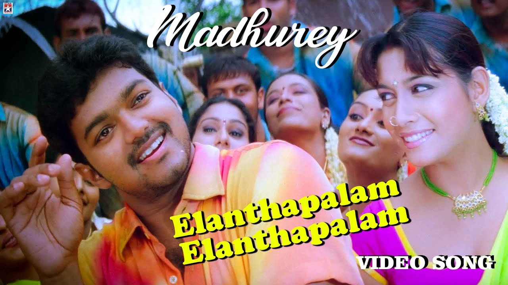
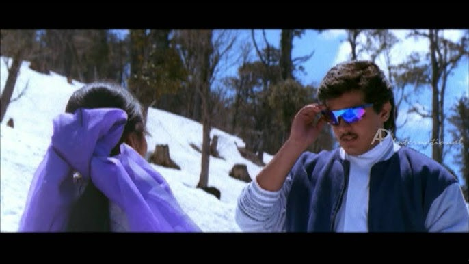

Anuradha Sriram is a prominent Indian playback singer known for her contributions to Tamil, Telugu, Kannada, and Hindi cinema. With a career spanning several decades, Anuradha Sriram has made a significant impact with her versatile singing and has collaborated with many renowned composers and lyricists.
|  | Elantha-Pazham |
|
 |
Appadi Podu |
|
Kaattu-Sirukki |
||
Karu-Karu-Karupayi |
||
|  | Meenamma-Adikalayilum |